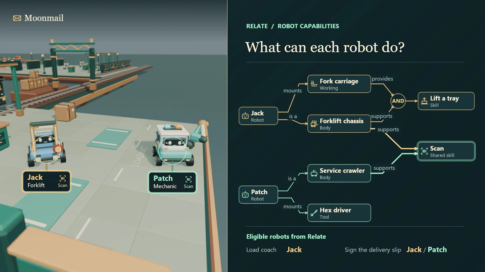
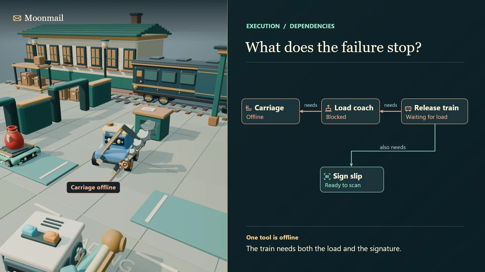
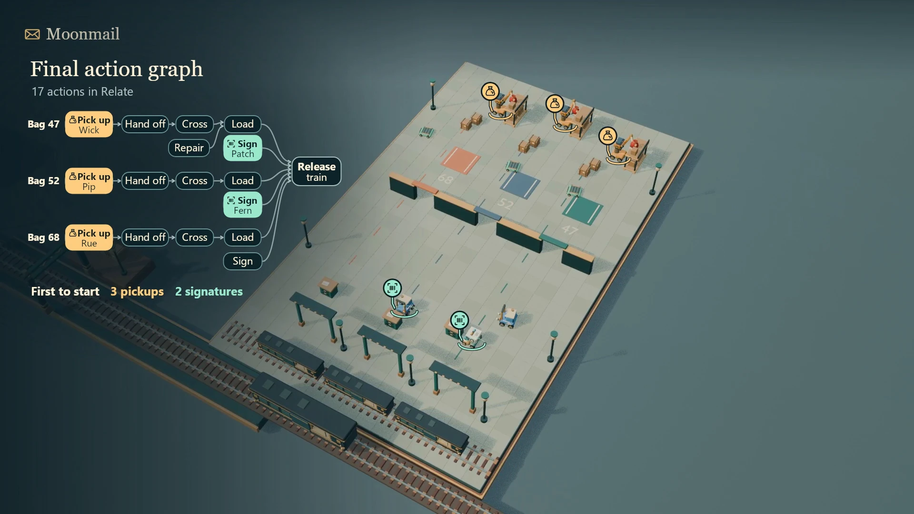

Hex driver
The tool fits the carriage collar. The validator can bind the repair to Patch.
Patch repairs the carriage, then Jack loads the coach.

Four robots share one delivery. They must get a mailbag aboard the right coach and sign its slip before the train can leave.
Built with Relate · Neo4j Hackathon 2026
The dispatch cycle
One embedded Relate file holds the goal, robot bodies and tools, current parcel custody, and each accepted version of the plan.
The orchestrator queries Relate for the goal, current facts, eligible robots and any work that can continue.
The language model returns actions, possible actors and the predecessors each action needs.
The validator checks skills, assignments and causal support with Z3. It admits a revision or returns a reason to retry.
The executor queries ready work, checks its preconditions, and writes custody, status and observations back to Relate.
A failed precondition triggers another graph read. The model sees which actions the fault reached and which actions still hold.
Before planning

Jack’s chassis supports lifting. His mounted fork carriage supplies that skill. Both must match, and the carriage must work when the lift begins.
The desk accepts a scan. Both chassis support scanning, so the model has a choice. In this recording it assigns Jack.
During execution

An experiment in the interactive demo
Same depot, seed, order and slipped collar. Only Patch’s mounted tool changes.
The tool fits the carriage collar. The validator can bind the repair to Patch.
Patch repairs the carriage, then Jack loads the coach.
The probe fits a test socket. The validator rejects the model’s attempted collar repair.
After reading the feedback, the model sends Skim to the station lift. The bag reaches the same coach.
Check the evidence. Open the inspection-probe recording and select the rejected proposal. Its Relate store contains both the failed draft and the accepted retry.
A larger depot

At tick 4, three pickups and two signatures start together.
The revised plan reuses their original graph nodes after one carriage fails.
Each of three bags needs a load and a signature. Every branch must finish before the train leaves.
Try Moonmail
The model proposes how to reach the goal. Relate gives the orchestrator the evidence to assign the work, see what broke and preserve what still works.
uv run --locked -m moonmail
Open http://127.0.0.1:8041/ and choose Next event to walk through the first delivery.
At the collar slip, choose Inspect graph data and Actions affected by a fault. The two returned rows come from the same post.rl database that drives the tour.